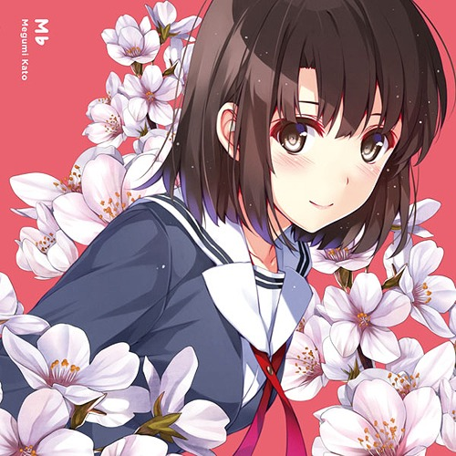

角色简介
加藤惠是丸户史明所创作的轻小说《路人女主的养成方法》及其衍生作品《唯一的她》的登场角色。
角色设定
私立丰崎学园二年级B班，社团blessing software的成员，Galgame《Cherry blessing》中的女主叶巡璃的原型。
角色性格
性格漠然，但对谁都不掩饰。但就是这样，还是尽职尽责地关心和顾虑周围的人。加藤“不被人所意识到”的特征，不会被人讨厌，连自己班的其他同学都神吐槽：“我们班里真有这个同学？”，但也绝不是不被人喜欢的人。
给自己的定位是波澜不惊，感情只是适当表达，在人心中不留纠葛，看不出喜怒哀乐的女孩。
角色歌
- M♭ 作词:稲葉エミ/作曲:奥井康介/编曲: 奈良悠樹
- LOVE iLLUSiON (Megumi Solo Ver.) 作词:稲葉エミ/作曲･编曲:奥井康介
- M♭ (Off Vocal Ver.)
- ETERNAL♭
- GLISTENNING♭
- Message from Megumi
获奖经历
- 2015年 国际最萌大会 冬季新番冠军
- 2015年 第三届香港高登最萌大赛 冠军
- 2017年 Bilibili动画角色人气大赏(日漫场) 季军
- 2017年 国际最萌大会 绿宝石项链得主、萌王
- 2017年 Waifu Awards 冠军
- 2017年 动漫部落新人萌 冠军
- 2017年 第三届天使动漫最萌 冠军
- 2017年 TWITTER年间女性角色选举 冠军
- 2018年 aniplus character tournamet 冠军